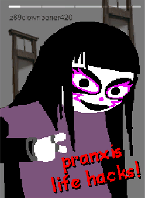

discord server
for adult fans or something. fans of what? me lmao?
discord server
for adult fans or something. fans of what? me lmao?
hey i think that clowns are pretty neat so i made this place. anyways if you want you can read my shit here.
huh looks like some clown made a
discord server
for adult fans or something. fans of what? me lmao?
— @z69clownboner420
Right so first, claiming that we as humans are the only intelligent life in the universe is both completely egocentric and scientifically disproven via the drake equation. we are not the only life out there, and if so, it stands to reason that some of that life came to think like us.
The jubilites arose in one such race on the planet whimsiphae. like for real? bro idk but just bear me with me for a bit k? so there are these jubilites who figured out that when it comes down to it, respecting each other and letting each other be was some pretty important stuff.
kinda makes you think, right? if they did exist, and we put em up next to our own society, who'd be the ones to look more primitive and dumb?
We as humans have the ability to channel the same feelings as those beings of pure whimsy. the influence of whimsiphae hasn't ended, doesn't matter whether it's fake or not, it's something that we can create.
It isn't craziness that does this, well, at least not beyond the bullshit craziness that's in all of us, the will to have fun and make the world a better place. this was in us the entire time, we just need to bring it out.
The clownsona is something of an alternative interpretation of the self, meaning as much as is needed for the person using it. for those who adopt the jubilite name, it often represents the spirit of whimsy and happiness and shit and gives a context for that to come out.
It's like, kind of how a costume party lets you be someone you're not, but always wanted to. the clownsona represents the perfect version of oneself, free from the artificial constraints of those in power.
Sure isn't a new thing that those with money want to control those without. setting up their silly rules and motherfucking bullshit ways of 'polite company' in an effort to circle jerk each other without making real change. screw that! just because it's a 'rule' doesn't mean that there's a moral right to doing it, espeically when it leads to so much harm and exploitation. know what else was made by the ruling class and called good and right? fucking slavery. fuck that noise. don the clownsona and throw off the made-up shakles of the world in the pursuit of happiness and whimsy for all.
With all the made-up bullshit of the world, we gotta make a constant effort to push back. you sit around all day not thinking about your principles, and before you know it you start to rot from the inside out. not cool. your inner clown needs nourishment just like your stomach does.
Pranxis is the art of subverting this by actively letting out your more whimsical side, using the very instruments used by the elites to keep us in check. usually done for the greater good of others, it helps move the world forward and it'll let you have a laugh while you're doing it. and once you start to see past the fake as shit rules that the oppressors and the ruling class made up, there's so many ripe opportunities for you to get your clown on.
Not every act of pranxis has to be super dramatic. could be as easy as hooking a fellow jubilite up with a joint in the middle of the street, and playing it off as pure audacity. or it could be the classic bucket over the door trap. it's all in good fun in the end, and though people might resist it at first, it's contagious! people will see your happiness and they will want to know more. and you can tell them all about the bullshit rules that the ultra-wealthy have made up for us.
Take money for instance. yeah, we need it to live, right? let's us get food and shit. and that's good, and a good use of it! but the vast majority of wealth is locked up in the plots and money making schemes of the super elite. the best part is that the very concept of that huge amount of wealth is itself another fakery. that money doesn't exist. it's in investment accounts and wall street and shit. all it does is tick up and down, not really doing any good for anybody. and hey if you can do it, why not brush a little your way and use it to help others?
Sure, you dont want to be stealing from folks. but for the super rich, whose wealth was built on the backs of slave labor and blood, it was never really theirs to begin with. really the entire concept of ownership on that level is a lie. made up by them to horde more and more at the cost of others.
Neopets fall within the jubilite ideals of whimsy and just generally vibing with it so it is pretty much considered one of the better ways of showing one's commitment to 'em.
Okay this shit aint really related to the neopets side but cool your jets. like. do you have any idea how hard it is to reorganize this shit? id have to use copy and paste or some shit. its pretty motherfucking hard. anyways abiding by the rules of organization dictated by society aint the clown way.
So for gender shit, take a look at the people in the world. what do you see? men? women? depending on where you're at, maybe youll even see folks who are neither. not saying you can always tell just from how somebody looks, thats total fucking bullshit, but more on that later, what we're talking about here is just like how everyone puts themselves forward, you feel?
Anyways unless youre in some sort of crazy diverse wonderland, which shit if you are good for you, society has dictated that people organize themselves into two groups, boy or girl. the whole entire reason goes all the way back to like when we farmed and shit, where you worked your ass off every day and then fucking died, but you got your motherfuckin bread, literally.
There were pretty much 2 jobs then separated by where it happened. you got the shit to manage around the house and the shit to manage around the field. we were like "aight well somebody's gotta do each job", so we just split the duties with the classification of the person. and we also decided to split based on what someone had in their pants, which, okay ancient humanity, weird choice but that's what happened.
That is stereotypical af and super fukin simplified, but the deets arent nearly as important as the fact that none of this shit matters anymore. the whole basis for why we all split shit up is completely bogus, but its still held up as the gold fucking standard for what everyone is because it makes us super easy to sort and control. "you got this junk, so you get this job in life".
But the reality is that gender aint ur junk. naw, Gender is that shit that you identify strongly as, like the category of what you are. just because someone is equipped with junk that society has decided is female doesnt mean the person identifies as the female gender, and vice versa ofc. and hopefully i dont blow your fukin mind when i say that guess what? your identity dont even need to be on the gender binary. non-binary, agender, bigender, it's all fucking valid, bro.
Even though there's some fake 'rules' that we've invented for how it all goes down, gender aint something that you can tell about a person from how they dress, how they act, whatevs. aint nobody who can tell you what yours is, thats something you gotta look inside yourself and find out.
But there aint no rule that says you gotta stick with the status quo of the fuckin' overseers and gatekeepers. just because a word's never been used dont make it any less valid, hell make up your own word for your identity if there's nothing out there that feels right. you're the only one who gets to decide which word or concept or whatever best matches your identity. anybody who tries to tell you otherwise is either trying to sell you something or trying to keep you in check for their own goals.
We got all that shit piling on about gender, you can see that the very concept of restricting anything about it is basically a buncha fake bs. all genders are valid, motherfuckers. great, glad we're on the same page for that one. but even the most woke of shit aint enough to cover for the shit we're gonna get into here.
So the first Jubilites realized just what a pile of shit their old gender systems were. they grew beyond it, some gaining more closeness to their labels and pronouns, others just kinda rejecting that shit along with society's strange obsession with needing to know it. they existed together and put whimsy first before anything else, which let them maintain their own identity while also respecting others identities, or lack of such.
Clowngender is another dimension of gender that represents a total lack of it even applying. everybody experiences this in different ways and shit and all of em are valid. clowngender is both a dimension but also an identity itself. the closer you are to clowngender, the more the entire rest of the genderspace just shrinks away for you. you could still have pronouns and shit, course the First Jubilites didn't give two shits about which ones were used, most of 'em anyways, but that sure as shit doesnt mean you cant.
Identifying with one of the classical identities that was already there would be the least clowngender, but clowngender is so much more than that. first off you can be only partially clowngender and that's just as valid as bein fully so. second you can combine it with other identities, so someone might identify as a clowngender woman. you could even be not at all clowngender, and that shit doesn't make you any less clown. it's all just a spectrum with a shitton of facets, where the closer to clowngender you get, the weaker your attachment to gender, and the closer further you are, the stronger it is.
Is clowngender the only way to represent this concept? fuck no, this is just one of many. when it comes down to it, it dont matter what you call it, shit's all about how you represent yourself and your identity, and how much of that identity leans into gender shit.
This website is an unofficial Psycholonials fansite created by dekarrin (NSFW Twitter Account) and is not affiliated with or endorsed by Andrew Hussie or The Silence Mill.
Sorry for any confusion, r/psycholonials.